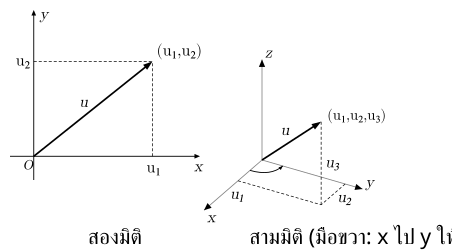
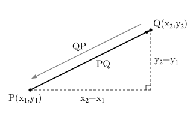
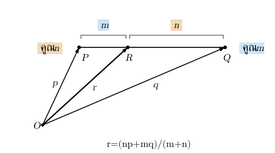
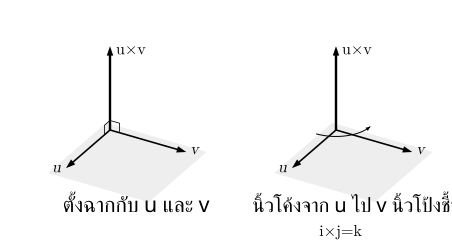
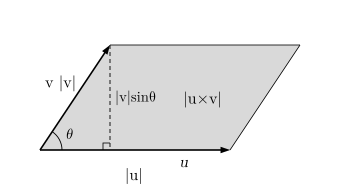
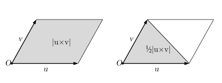
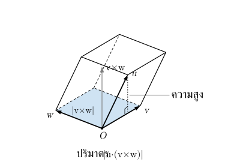
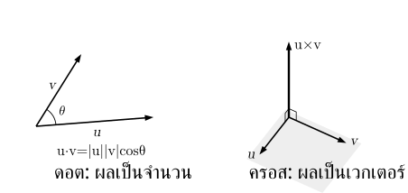

. เวกเตอร์ พิกัด และขนาด
เวกเตอร์เป็นปริมาณที่มีทั้ง ขนาดและทิศทาง เช่น การกระจัด ต่างจากปริมาณที่บอกเพียงจำนวนหรือขนาด เช่น มวล
ลูกศรแทนเวกเตอร์: ความยาวบอกขนาด หัวบอกทิศ เวกเตอร์เท่ากันเมื่อขนาดและทิศเดียวกัน แม้ต่างตำแหน่ง
ในสรุปนี้ใช้ , , แทนเวกเตอร์ และเขียนองค์ประกอบเป็น เมทริกซ์คอลัมน์
คอลัมน์เรียงองค์ประกอบ จากบนลงล่าง; สองมิติมีสองแถว

เวกเตอร์จากจุด ไปจุด หาได้จาก
ในที่นี้ หมายถึงเวกเตอร์จาก ไป
คือ พิกัดปลายลบพิกัดต้น ถ้าสลับต้นกับปลาย เวกเตอร์จะเปลี่ยนเป็นทิศตรงข้าม

ขนาดของเวกเตอร์คือ
เช่น
มีขนาด
เวกเตอร์ศูนย์มีทุกพิกัดเป็นศูนย์และมีขนาด แต่ไม่มีทิศทาง จึงใช้กำหนดมุมกับเวกเตอร์อื่นไม่ได้
. การบวก ลบ คูณด้วยจำนวน และเวกเตอร์หนึ่งหน่วย
การบวกและลบเวกเตอร์ทำทีละพิกัด เช่น
การคูณด้วยจำนวน คือ
และ
ถ้า ไม่เป็นเวกเตอร์ศูนย์ เมื่อ เวกเตอร์ มีทิศเดียวกับ เมื่อ มีทิศตรงข้าม และเมื่อ ได้เวกเตอร์ศูนย์
บวกแบบต่อหัวต่อหาง: ต่อเวกเตอร์ตัวหลังจากปลายตัวหน้า แล้วลากจากต้นแรกถึงปลายสุด; แบบต้นร่วม: สร้างสี่เหลี่ยมด้านขนาน ผลบวกคือทแยงจากต้นร่วมถึงมุมตรงข้าม
การหา ให้เลื่อนเวกเตอร์โดยคงขนาดและทิศทางเดิมจน หางของ กับ อยู่ที่จุดเดียวกัน แล้วลากลูกศร จากหัว ไปหัว จะได้เวกเตอร์
จำทิศจากลำดับการลบ: หัวตัวที่ถูกลบ → หัวตัวตั้ง ถ้าลากกลับจากหัว ไปหัว จะได้
เวกเตอร์หนึ่งหน่วย มีขนาด ถ้าต้องการเวกเตอร์หนึ่งหน่วยทิศเดียวกับ ให้หารด้วยขนาดของ
เมื่อ
เวกเตอร์หนึ่งหน่วยตามแกนพิกัดคือ
จึงเขียนเวกเตอร์ที่มีองค์ประกอบ , , เป็น ได้
ระวัง: การบวกเวกเตอร์ไม่ได้แปลว่าขนาดบวกกันเสมอ ต้องดูทิศทางด้วย และสร้างเวกเตอร์หนึ่งหน่วยจากเวกเตอร์ศูนย์ไม่ได้
จุดแบ่งส่วนของเส้นตรง ถ้าวัดทุกจุดจากจุด และให้ , , เป็นเวกเตอร์จาก ไปยังจุด , , ตามลำดับ ถ้า แบ่ง ภายในโดย เมื่อ จะได้
ตัวคูณสลับกันแบบไขว้ เหมือนสูตรจุดแบ่งในบทเรขาคณิตวิเคราะห์: คูณด้วย และ คูณด้วย เพราะ อยู่ใกล้จุดที่ส่วนของเส้นสั้นกว่า ถ้าเป็นจุดกึ่งกลาง () จะได้

. ดอตโปรดักต์และมุมระหว่างเวกเตอร์
ดอตโปรดักต์เขียนเป็น ผลที่ได้เป็น จำนวน
ถ้าใช้พิกัด
ถ้า และ ไม่เป็นเวกเตอร์ศูนย์ และ เป็นมุมระหว่างเวกเตอร์ โดย จะมี
จึงหามุมได้จาก และอ่านลักษณะมุมได้ว่า
| ค่า | มุมระหว่างเวกเตอร์ |
|---|---|
| มุมแหลม หรือมุม | |
| มุมฉาก | |
| มุมป้าน หรือมุม |
สมบัติสำคัญ ได้แก่
- เมื่อ , เป็นจำนวนจริง
จากการกระจายดอตโปรดักต์ ยังได้
ระวัง: การสรุปมุมจากดอตโปรดักต์ต้องใช้เวกเตอร์ที่ไม่เป็นศูนย์ แม้เวกเตอร์ศูนย์จะดอตกับทุกเวกเตอร์แล้วได้ แต่ไม่ได้มีมุมฉากกับทุกเวกเตอร์
. ครอสโปรดักต์
ครอสโปรดักต์เขียนเป็น ใช้กับเวกเตอร์ในสามมิติ ผลที่ได้เป็น เวกเตอร์ ถ้าเวกเตอร์อยู่บนระนาบ จะเขียนพิกัดตัวที่สามเป็น เพื่อใช้สูตรนี้ได้
วิธีหาครอสทีละองค์ประกอบ
วาง กับ เป็นคอลัมน์คู่กัน โดย อยู่ทางซ้ายและ อยู่ทางขวา เรียงองค์ประกอบ , , จากบนลงล่างดังนี้
| องค์ประกอบ | วิธีหา |
|---|---|
| องค์ประกอบ | ตัดแถว เหลือแถว กับ แล้ว คูณลงลบคูณขึ้น ได้ |
| องค์ประกอบ | ตัดแถว เหลือแถว กับ แล้ว คูณขึ้นลบคูณลง ได้ |
| องค์ประกอบ | ตัดแถว เหลือแถว กับ แล้ว คูณลงลบคูณขึ้น ได้ เช่นเดียวกับองค์ประกอบ |
“คูณลง” คือคูณช่องซ้ายบนกับขวาล่าง; “คูณขึ้น” คือคูณช่องซ้ายล่างกับขวาบนของสองแถวที่เหลือ โดยคงลำดับแถวเดิม
นำผลทั้งสามมาเรียงในเมทริกซ์คอลัมน์
ผลครอสไม่เป็นศูนย์ → ตั้งฉากกับ ทิศตามกฎมือขวา เรียงจาก ไป

ตรวจคำตอบ: นำผลครอสไปดอตกับ และ ต้องได้ ทั้งคู่ เพราะครอสตั้งฉากกับเวกเตอร์ตั้งต้น ถ้ามีค่าใดไม่เป็น แสดงว่าคำนวณผิด แต่ได้ ทั้งคู่ยังต้องตรวจขนาดและทิศของผลครอสด้วย
สำหรับ และ ที่ไม่เป็นศูนย์ ขนาดของครอสโปรดักต์คือ

สมบัติสำคัญ ได้แก่
- เมื่อ , เป็นจำนวนจริง
- ซึ่งผลเป็นเวกเตอร์ศูนย์
ถ้า และ ไม่เป็นศูนย์ จะขนานกันก็ต่อเมื่อ และเขียนได้ว่าเวกเตอร์หนึ่งเป็นจำนวนคูณของอีกเวกเตอร์หนึ่ง เช่น
เวกเตอร์ฐานมี , , ถ้าสลับลำดับจะเปลี่ยนเครื่องหมาย
ระวัง: ครอสโปรดักต์สลับลำดับแล้วเปลี่ยนเครื่องหมาย และโดยทั่วไปเปลี่ยนการจัดกลุ่มไม่ได้ จึงต้องรักษาลำดับกับวงเล็บตามโจทย์
. พื้นที่และปริมาตรจากเวกเตอร์
ถ้า และ เป็นเวกเตอร์ของด้านที่ออกจากจุดเดียวกัน
| รูปเรขาคณิต | พื้นที่ |
|---|---|
| พื้นที่สี่เหลี่ยมด้านขนาน | |
| พื้นที่สามเหลี่ยม |
สูตรนี้เชื่อมกับฐานคูณสูง เพราะ คือความสูงเมื่อใช้ เป็นฐาน

ถ้ามีเวกเตอร์สามตัว , , เป็นขอบที่ออกจากจุดเดียวกัน ปริมาตรทรงสี่เหลี่ยมด้านขนานคือ
ต้องมีค่าสัมบูรณ์ เพราะปริมาตรไม่ติดลบ ถ้าค่านี้เป็นศูนย์ เวกเตอร์ทั้งสามไม่สร้างปริมาตรสามมิติ เช่น อยู่ในระนาบเดียวกัน
เป็นด้านฐาน เป็นขอบเอียง ความสูงวัดตั้งฉากฐาน ไม่ใช่ความยาว

ระวัง: ถ้าโจทย์ให้พิกัดจุด ต้องสร้างเวกเตอร์ของด้านจากจุดร่วมเดียวกันก่อน ไม่ใช้พิกัดจุดแทนเวกเตอร์ของด้านทันที
. แนวที่เลือกฝึก: แยกดอตกับครอสแล้วตรวจสมบัติ
ดูดอต/ครอสก่อนคำนวณ เพราะชนิดผลลัพธ์ต่างกัน
| สิ่งที่พิจารณา | ดอตโปรดักต์ | ครอสโปรดักต์ |
|---|---|---|
| ผลลัพธ์ | จำนวน | เวกเตอร์ |
| สลับลำดับ | ค่าเดิม | เปลี่ยนเครื่องหมาย |
| ใช้ตรวจเวกเตอร์ไม่เป็นศูนย์ | ตั้งฉากเมื่อดอตได้ | ขนานเมื่อครอสได้เวกเตอร์ศูนย์ |

ตรวจตั้งฉาก → ใช้ดอต; ตรวจขนานในสามมิติ → ใช้ครอสหรือดูว่าเวกเตอร์หนึ่งเป็นจำนวนคูณอีกเวกเตอร์หรือไม่
เมื่อมีผลบวกหรือจำนวนคูณเวกเตอร์ → กระจายด้วยสมบัติ → ตรวจพจน์ที่เป็นศูนย์หรือหักล้างกัน
เมื่อพบ ที่ไม่เป็นศูนย์ เรารู้ว่าเวกเตอร์นี้ตั้งฉากกับทั้ง และ จึงมี
และ
สองสมการนี้ยังคงให้ค่า แม้ครอสโปรดักต์จะเป็นเวกเตอร์ศูนย์ แต่ในกรณีนั้นใช้กล่าวถึงทิศทางหรือมุมของผลครอสไม่ได้
ระวัง: อย่าสลับเงื่อนไข “ดอตเป็นศูนย์” กับ “ครอสเป็นศูนย์” และก่อนสรุปความสัมพันธ์เรื่องมุมหรือทิศทาง ต้องตรวจว่าเวกเตอร์ที่เกี่ยวข้องไม่เป็นศูนย์